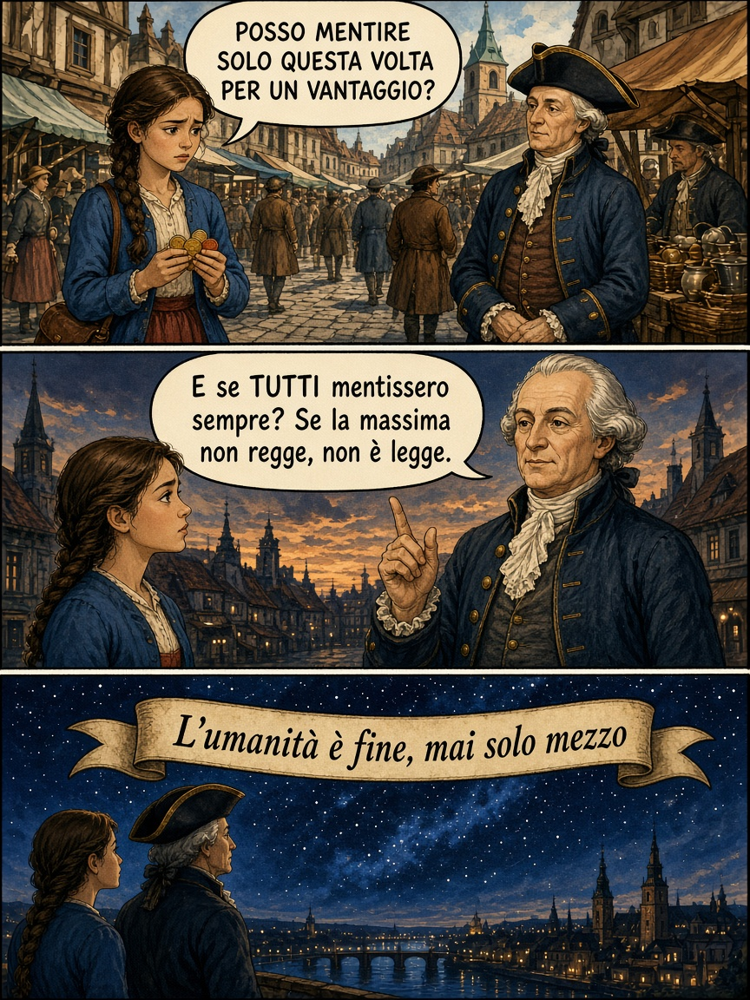
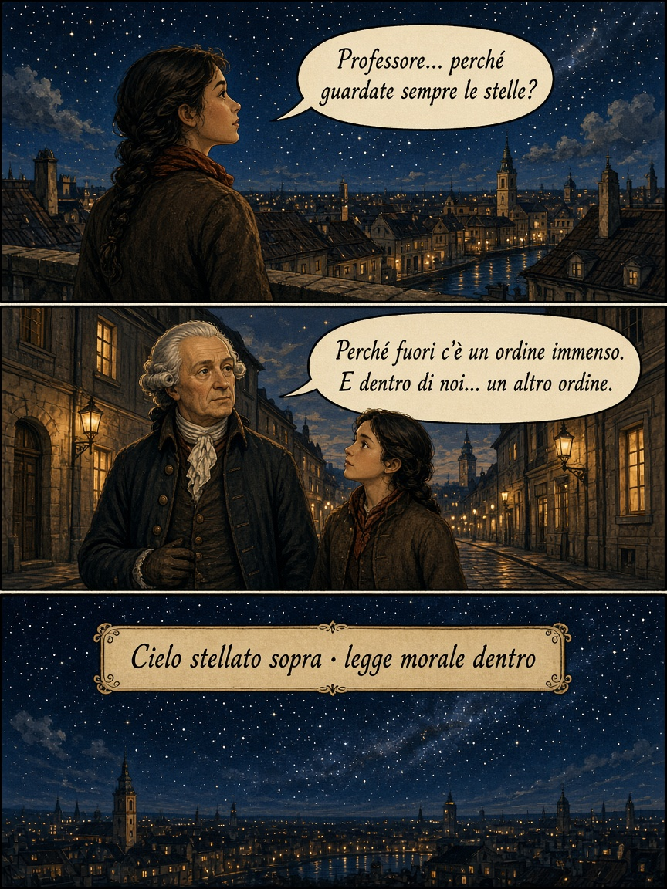

Ripasso · mappa
Passeggiata di Königsberg
Sei pin sulla mappa. A ogni fermata: domanda o dilemma. Non è arcade: serve per ripassare.

Fermata 1/6
Punti 0

Ripasso · mappa
Sei pin sulla mappa. A ogni fermata: domanda o dilemma. Non è arcade: serve per ripassare.

